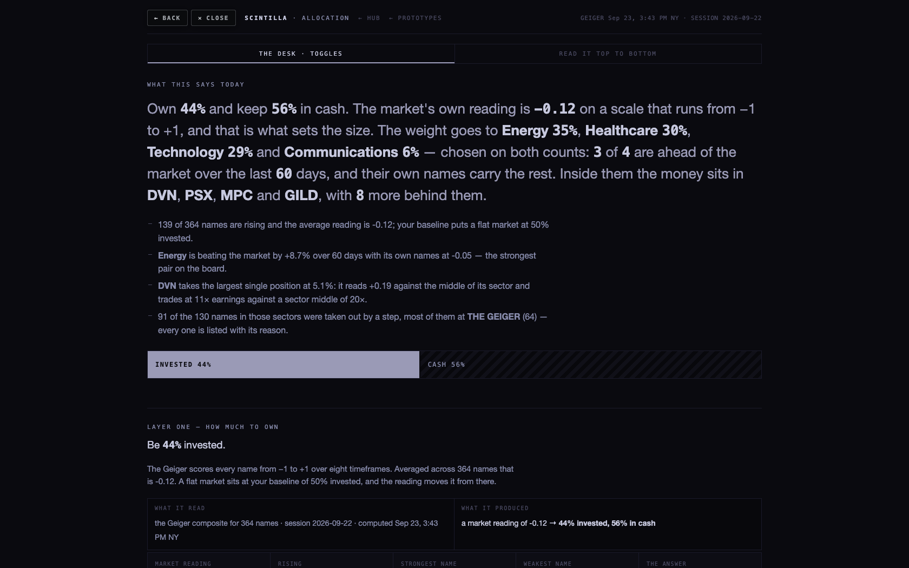
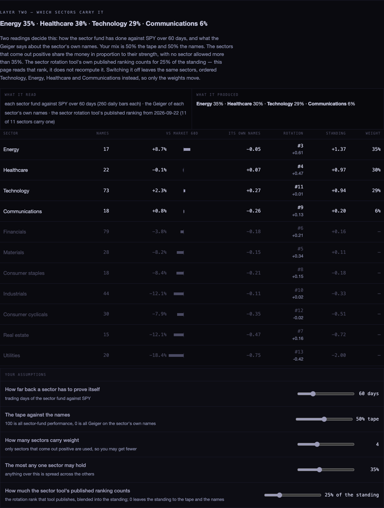
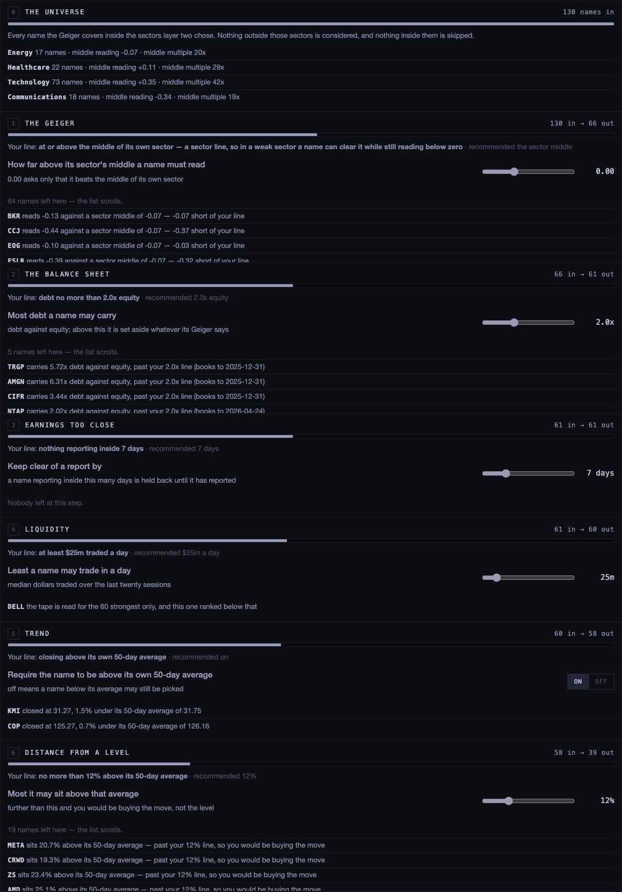
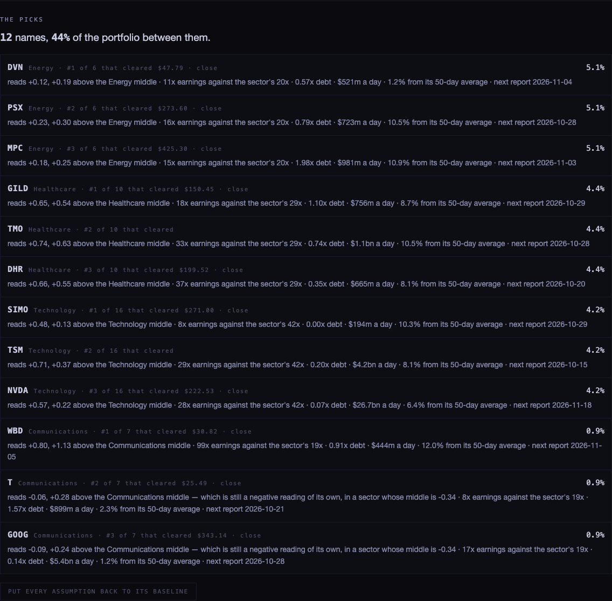
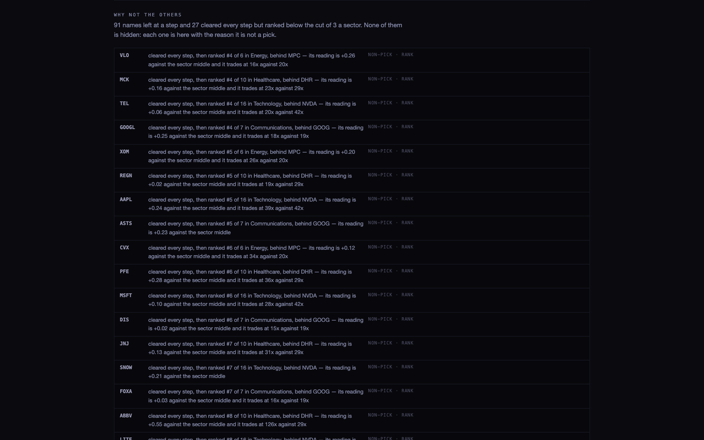
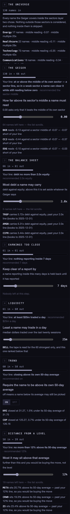
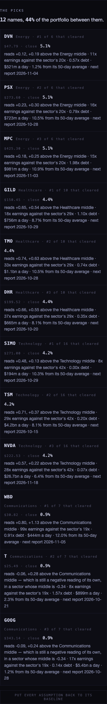

You said layer three was jumping the gun, and that the other tool had a process of filtering between the options. Layer three is now that process: a funnel you watch, one step at a time, where every name that leaves is named and given the reason it left.
I read both of them before touching anything: the older allocation module at
allocation.scintillahub.ai (its source is _ALLOC_DEPLOY on this Mac) and the sector
rotation tool (SECTOR_ROTATION.html, which publishes the table sector_rankings).
The allocation module's filtering ran like this, and its own notes record each stage:
| STAGE | WHAT IT DID |
|---|---|
| Universe | Every membership row — cohort, industry, size, sector — plus your favourites. Its own measured note: 387 tickers in, 265 of them candidates, 182 of those able to be ranked. |
| Candidates | A name qualified by sitting in one of the pick cohorts (growth, AI hardware, AI software, crypto, megacap, blue chip, thematic, international) or by being a favourite. |
| Geiger cover | Names with no Geiger were dropped. The tool's own audit flags this as the weak point: “83 of the 265 candidates have no geiger… they are invisible rather than flagged.” |
| Style re-rank | Geiger plus half the average style spread, so a cold QQQ literally pushes growth names up the list. |
| Sleeve competition | The coldest three in each sleeve were tagged ADD, the hottest TRIM. |
| Your hand | Drop greyed a row and pulled it out of the statistics without deleting it; pick marked a keeper, capped by your total-names limit. The desk page says it plainly: “this is a ranked shortlist, you still choose”. |
| Comparables | Peers by industry, with outliers removed by the standard 1.5×IQR fences — and the number removed was printed, not hidden. |
The sector rotation tool is a different animal: it computes RS-Ratio and RS-Momentum on weekly bars and puts each sector in Leading, Improving, Weakening or Lagging. It publishes a rank per sector, which is the thing worth borrowing.
Top to bottom: how much to own, where it goes, which names, why not the others, and then the picks. Layers one and two each carry a strip saying what it read and what it produced, so there is no step where a number appears without a source.


Every name the Geiger covers inside the chosen sectors enters at the top. Then, one step at a time:
| STEP | ITS LINE | RECOMMENDED | WHAT IT READS |
|---|---|---|---|
| The Geiger | at or above the middle of its own sector | the sector middle | the published Geiger composite, chart API /geiger |
| The balance sheet | debt no more than 2.0× equity | 2.0× | ratios_history, last full year, with the book date shown |
| Earnings too close | nothing reporting inside 7 days | 7 days | earnings_events, from today forward |
| Liquidity | at least $25m traded a day | $25m | the median of twenty sessions of dollars traded, from /candles |
| Trend | closing above its own 50-day average | on | the same daily bars |
| Distance from a level | no more than 12% above that average | 12% | the same daily bars |
Each step shows how many went in, how many came out, a bar that narrows as the funnel narrows, its line as a slider you can move with the recommended value printed beside it, and then every name that left, with the number that removed it.

It ends with the picks, each with the one line that earned it, and before them the names that did not make it — both the ones a step removed and the ones that cleared everything but ranked below your cut.




| NUMBER | SOURCE |
|---|---|
| The reading on any name | chart API /geiger — the published composite across your eight saved timeframes. Nothing is recomputed here. |
| Which sector a name is in | company_profile on scintilla-live |
| Multiples | fundamentals, with the age of the row shown |
| Debt against equity | ratios_history, last full year, book date printed next to the name |
| When a name reports | earnings_events, and whether the date is confirmed |
| Sector against the market | chart API /candles, the eleven sector funds against SPY |
| The rotation rank | sector_rankings, published by the sector rotation tool, with its date on screen |
| Dollars traded, the 50-day average | chart API /candles, 120 daily bars per name |
| The live price | chart API /quotes, asked for after the page has drawn |
perSector slider's doing, and it may want a rule.scintillahub.ai, so for these screenshots I served the page locally and passed the API calls
through a local proxy. The data in every screenshot is real and live — only the route to it was local.